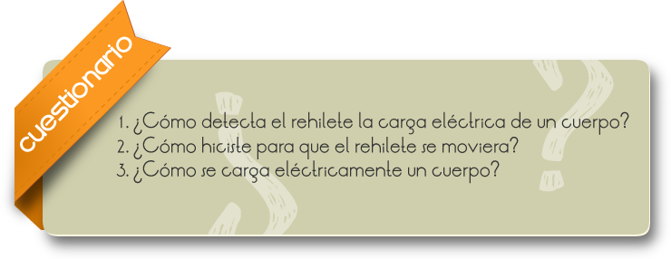
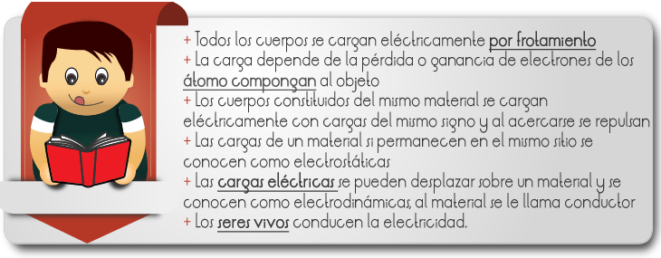

Una Carga eléctrica es una propiedad intrínseca de algunas partículas subatómicas que se manifiesta mediante atracciones y repulsiones que determinan las interacciones electromagnéticas entre ellas. La materia cargada eléctricamente es influida por los campos electromagnéticos siendo, a su vez, generadora de ellos. La interacción entre carga y campo eléctrico es la fuente de una de las cuatro interacciones fundamentales, la Interacción electromagnética.
La carga eléctrica es de naturaleza discreta, fenómeno demostrado experimentalmente por Robert Millikan. Por definición, los electrones tienen carga -1, también notada -e. Los protones tienen la carga opuesta, +1 o +e. Los quarks tienen carga fraccionaria ±1/3 o ±2/3, aunque no se han observado aislados en la naturaleza.1
En el Sistema Internacional de Unidades la unidad de carga eléctrica se denomina culombio (símbolo C). Se define como la cantidad de carga que pasa por una sección en 1 segundo cuando la corriente eléctrica es de 1 amperio, y se corresponde con la carga de 6,25 × 1018 electrones aproximadamente.
¿Cómo detectar que un objeto está cargado eléctricamente?
Construir un dispositivo: Rehilete electrostático
1. Dividan la plastilina en dos partes de distinto tamaño.
2. Fijen el lápiz sobre la mesa con el trozo grande de plastilina; cuiden que quede en posición vertical y con la punta hacia arriba.
3. Peguen el trozo pequeño de plastilina sobre la parte inferior del tubo de ensayo y coloquen este invertido sobre el lápiz a modo de que la plastilina quede hacia arriba y el tubo pueda girar libremente.
4. Inserta la parte media del tubo de plástico en forma horizontal
5. Ahora hazlo girar.

Comentarios
